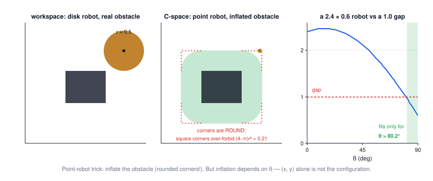
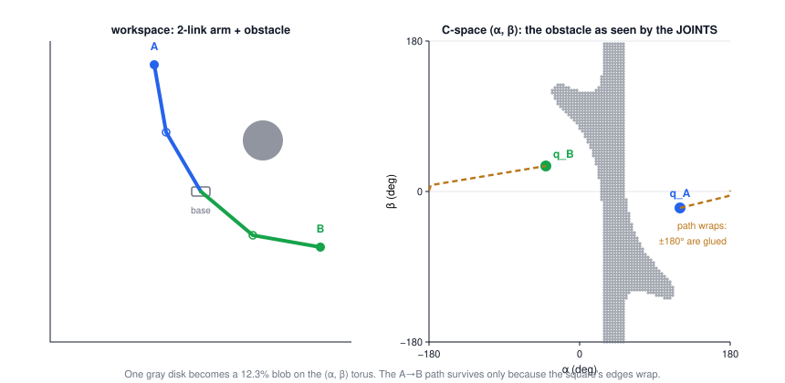

Lecture 12: Configuration Space
CSE 276C, Lecture 12 · guest lecture (Y. Jiao, adapted from Christensen & Choset). All numbers verified in
scripts/lec12/verify.py.The big picture
Every earlier lecture optimized or solved over numbers. Planning needs a space to search first — and the right one isn't the room the robot stands in, it's the space of robot poses. The lecture's one transformation:
extended body colliding in the workspace ⟶ a point inside a forbidden set in C-space
| robotics problem | its C-space | dim |
|---|---|---|
| point robot / drone position | \(\mathbb R^2\) or \(\mathbb R^3\) | 2–3 |
| planar mobile robot (couch, car body) | \(SE(2) = \mathbb R^2 \times S^1\) | 3 |
| free-flying rigid body | \(SE(3) = \mathbb R^3 \times SO(3)\) | 6 |
| n-joint arm, unrestricted joints | the torus \(T^n\) | n |
| mobile base + arm | \(SE(2) \times T^n\) | 3 + n |
1 · A robot is not a point
The opening slide's trap: plan a path for the robot's centerline through a corridor and the body still clips the walls — a reference point alone does not capture collisions. Costmap inflation (next section) is the practical fix for round robots, and the lecture's two "not quite" pictures show exactly where it stops working: elongated robots and arms.
2 · Workspace vs configuration space
| symbol | meaning |
|---|---|
| \(W\) | workspace: the physical room (ℝ² or ℝ³); obstacles \(WO \subset W\) live here |
| \(Q\) | configuration space: all complete robot poses; one point q = one full posture |
| \(R(q) \subset W\) | the set of physical points the body occupies at configuration q |
| \(QO = \{q \mid R(q) \cap WO \neq \emptyset\}\) | the C-space obstacle: every pose that touches something |
| \(Q_{free} = Q \setminus QO\) | free space; a path is a continuous \(c : [0,1] \to Q_{free}\) |
3 · The disk robot: obstacle inflation
For a translating disk of radius r, shrinking the robot to its center costs you growing every obstacle by r. Verified on 200,000 random placements: disk-vs-rectangle collision is exactly "center inside the inflated rectangle" — provided the inflation has rounded corners (quarter-circles of radius r). Square-cornered inflation wrongly forbids the four corner regions, total area \((4-\pi)r^2\) (0.21 m² for r = 0.5) — real free space your planner would never use.

4 · Minkowski sums: inflation done right
$$A \oplus B = \{a + b \mid a \in A,\, b \in B\}, \qquad C_{obs} = O \oplus (-R)$$For any translating robot shape R (reference point at its origin): collision means some robot point lands on some obstacle point, \(q + r = o\), i.e. \(q = o - r\) — so the forbidden reference-point positions are exactly the obstacle Minkowski-summed with the negated robot. Verified by sampling: no collision ever occurs outside the SAT-computed Minkowski set. Disk case: \(O \oplus B_r\) = the inflation of §3. Polygon case: slide the flipped robot around the obstacle boundary and trace.
5 · When orientation matters
A planar rigid body has 3 DOF: \(q = (x, y, \theta) \in \mathbb R^2 \times S^1\). Each fixed θ gives its own forbidden slice \(Q_{obs}(\theta) = O \oplus (-\mathrm{Rot}(\theta) R)\), and stacking the slices over θ builds a twisted 3-D volume (the slides' helical stack). Projecting θ away loses real solutions: the "2D inflation may not be enough" slides show a start and goal that no fixed-orientation map connects, while a path that rotates mid-passage sails through — the moving-piano problem.
🕹️ Try it: the full (x, θ) picture of a long robot crossing a narrow gap — drive it through with and without rotating:
6 · Manipulator C-space
For an arm, q is the joint vector — a 2-link arm has \(q = (\alpha, \beta)\), and one workspace obstacle casts a curved shadow onto the joint-angle square. Computed for a real disk obstacle (both links collision-checked on a 240² grid): the shadow covers 12.3% of the torus, and the free space stays connected only because the square's edges wrap (one component on the torus — verified by wrap-around flood fill).

🕹️ Try it: drag the obstacle and watch its C-space shadow morph; drag the dot through the seam:
7 · Interlude: FK and IK of the 2-link arm
$$x = L_1\cos\alpha + L_2\cos(\alpha+\beta), \qquad y = L_1\sin\alpha + L_2\sin(\alpha+\beta)$$Forward kinematics \(K : Q \to W\) maps joints to the hand — note K(q) (hand point) is not R(q) (whole body). Inverse kinematics inverts it:
$$\gamma = \cos^{-1}\!\frac{x^2 + y^2 - L_1^2 - L_2^2}{2 L_1 L_2}, \qquad \beta = \gamma, \qquad \alpha = \mathrm{atan2}(y, x) \mp \sin^{-1}\!\frac{L_2 \sin\gamma}{\sqrt{x^2+y^2}}$$Two solutions (elbow-down: β = +γ with −; elbow-up: β = −γ with +), both verified to reproduce (x, y) in 500/500 random round-trips. The slides print this slightly differently — see the typos box. Beyond two links: IK goes numerical (Lecture 5's Newton) or case-analytic (the PUMA code slide), solutions multiply, and an IK target is really a set of acceptable configurations — plan to the set, and collision-check all links, not the tip.
8 · Topology: torus, wraparound, manifolds
| space | shape | robot meaning |
|---|---|---|
| \(\mathbb R^2\) | plane | two unbounded translations |
| \(S^1 \times \mathbb R\) | cylinder | one angle + one translation |
| \(T^2 = S^1 \times S^1\) | torus | two free revolute joints — opposite edges of the coordinate square glued |
Same dimension, different gluing — and the gluing has teeth:
$$d(359°, 1°) = 2°, \ \text{not } 358° \qquad\Longrightarrow\qquad d(a,b) = \min(|a-b| \bmod 360,\ 360 - |a-b| \bmod 360)$$Every distance, interpolation, and "nearest neighbor" in a sampling planner must use the wrapped metric, or the planner will take the 358° detour. A C-space is in general a manifold: locally Euclidean, but no single global coordinate chart need cover it smoothly. Distinguish two kinds of trouble: chart singularities (longitude undefined at the poles — the space is fine, the coordinates aren't; switch charts) vs physical singularities (arm fully stretched: the Jacobian loses rank and some hand velocities become impossible — Lecture 2's null space appearing in the geometry).
9 · The planner's interface
| inputs | output |
|---|---|
| Q (with its topology), robot + obstacle geometry, \(q_{start}\), \(q_{goal}\), a collision checker | a continuous \(c:[0,1] \to Q_{free}\) with \(c(0) = q_{start}\), \(c(1) = q_{goal}\) — or a declared failure |
The three questions this hands to Lecture 13: how to represent/explore a continuous high-dimensional Q, how to test connections efficiently, and when a path can be guaranteed or improved — graph search, sampling, collision checking.
10 · Summary
- Configuration space makes the robot a point by making the space remember the body: QO = poses that touch something.
- Disk robots: inflate obstacles (rounded corners — square corners steal (4−π)r² per corner block). General translating shapes: Minkowski sum with −R.
- Rotation adds a dimension and cannot be projected away: the couch needs (x, y, θ), and some passages exist only through the θ dimension.
- Arms live on tori: one workspace obstacle → a curved 12%-of-the-torus blob, and paths may legally wrap through ±180°.
- Respect the topology in every metric and interpolation; distinguish chart singularities from physical (Jacobian) ones.
- A planner needs only: Q, a collision checker, start, goal — and the discipline to check whole edges, not endpoints.
⚠️ Typos in the slides to watch out for
- IK slide: α is printed as \(\sin^{-1}\!\big(\frac{L_2\sin\gamma}{x^2+y^2}\big) + \tan^{-1}(y/x)\) — the denominator is missing the square root: it must be \(\sqrt{x^2+y^2}\). Verified: with the printed version 500/500 random round-trips through the slide's own FK fail; with √, 0/500.
- Same slide, "β = 180 − γ": inconsistent with the printed γ. The printed \(\cos\gamma = \frac{x^2+y^2-L_1^2-L_2^2}{2L_1L_2}\) makes γ the FK joint angle itself, so β = γ (verified: β = γ round-trips exactly; β = 180° − γ fails 500/500). "β = 180 − γ" is right only if γ is the triangle's interior elbow angle, whose cosine is the negative of the printed fraction. One sign, pick one convention.
- Manifolds slide: "Pyhsical Singularity" → Physical.
- Transient note on the C-space-obstacle slide ("An IK target does not always specify a safe path…") is the subtitle of the previous slide, duplicated — the content is about mapping workspace obstacles to C-space.